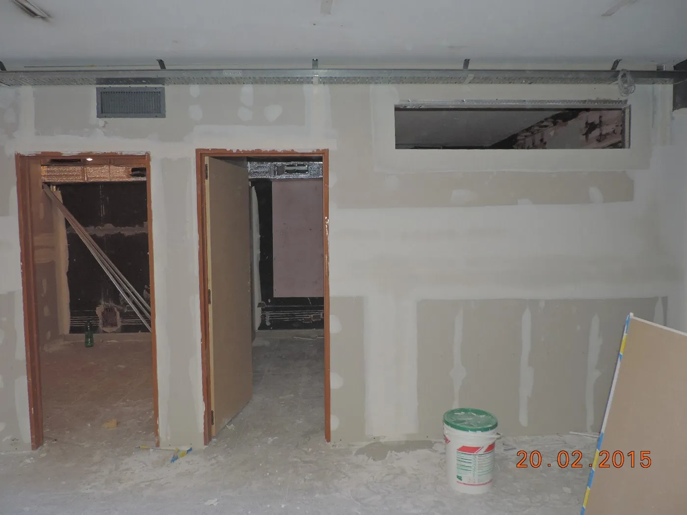
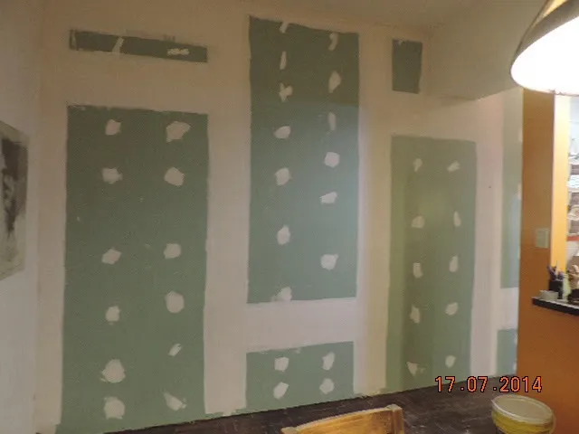
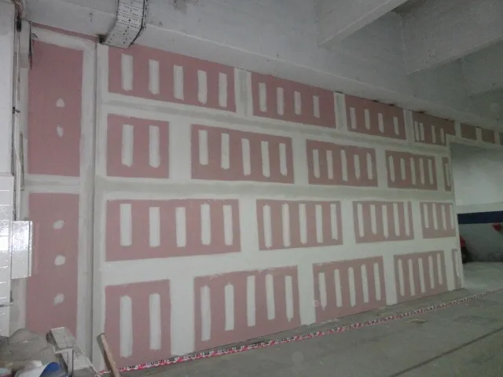
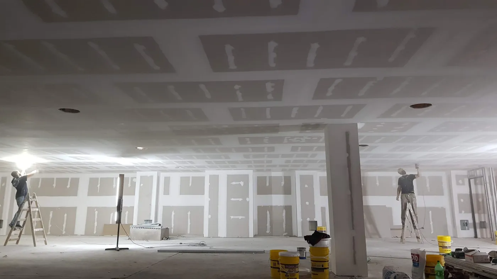
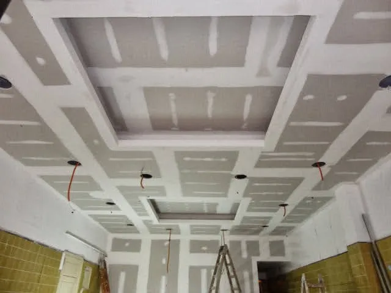
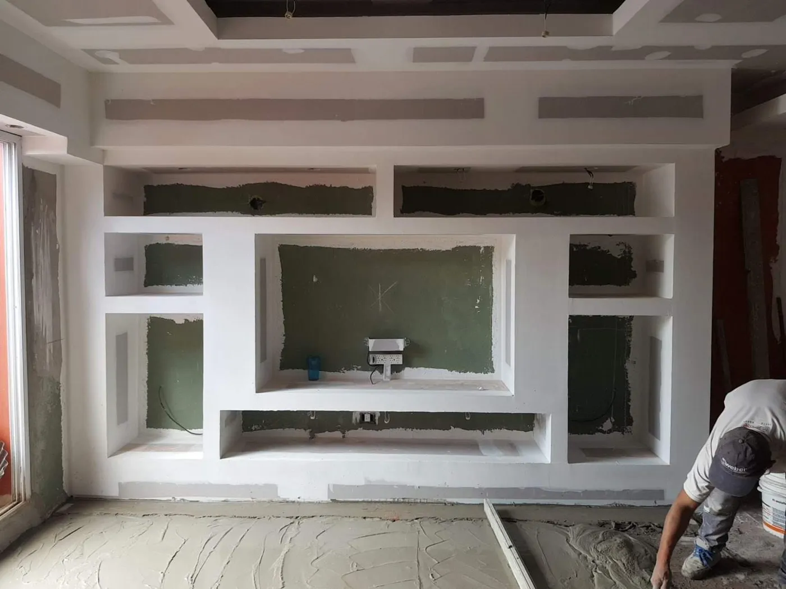
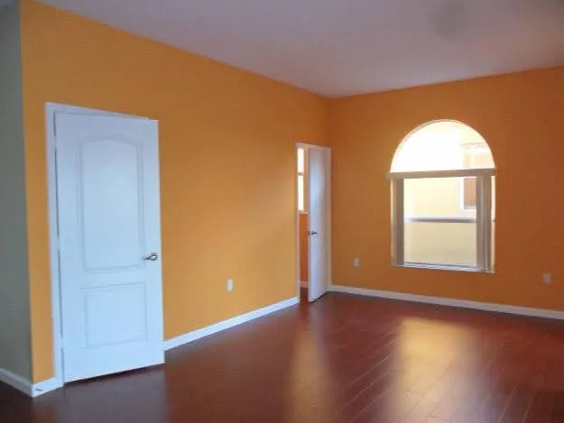
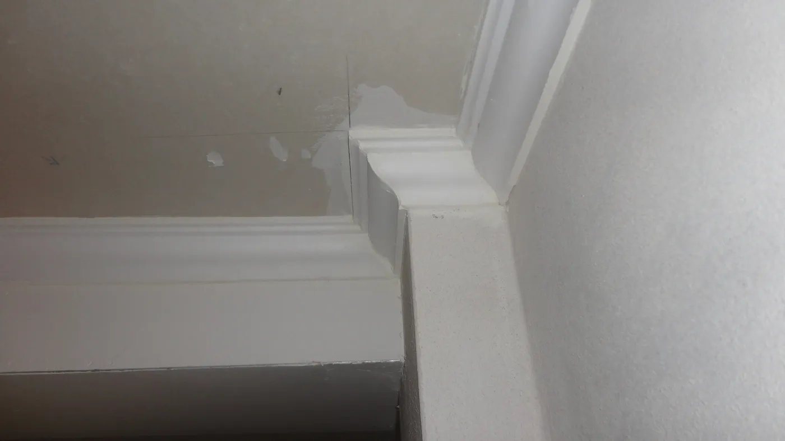

Placa estándar
Cielorrasos y paredes
Para tabiques divisorios, cielorrasos y revestimientos en ambientes secos. Superficie lisa y continua.
Cielorrasos, paredes divisorias, revestimientos antihumedad y muebles a medida en Zona Oeste. Obras para casas, locales, constructoras y arquitectos.
El sistema Durlock es construcción en seco: sin agua ni largos tiempos de secado, más liviano que la obra húmeda y listo para pintar. Lo importante es elegir bien la placa.

Para tabiques divisorios, cielorrasos y revestimientos en ambientes secos. Superficie lisa y continua.

Para baños, lavaderos, duchas y cocinas. Una solución definitiva contra la humedad, con terminación de calidad.

Ignífuga, para cocinas, pasillos y salidas de emergencia. Protege la estructura ante un siniestro.
Soluciones completas en Durlock y terminaciones para renovar, ampliar o transformar una casa, un departamento o un local.

Fijos, modulares desmontables y en PVC para todo tipo de ambientes.

Estructuras para luz indirecta.

Centros de TV, nichos, bibliotecas y placares a medida.

Con enduido y lijado.

En yeso o poliestireno.
Lana de vidrio y materiales aislantes dentro de paredes y cielorrasos: menos ruido y menos frío o calor.
Elegí qué querés hacer, cargá las medidas y mirá cuántas placas lleva. Después mandale todo por WhatsApp y te responde con el presupuesto.
Cuenta de referencia con 10 % de desperdicio. Las medidas finales y el precio los confirma Joel en la visita.
Mandale las medidas a JoelVideos de obra subidos por Joel a su Instagram.
“Soy Joel Orlando, colocador de durlock con amplia trayectoria desde el año 1992. Realizamos obras civiles e industriales para constructoras, arquitectos, contratistas y clientes particulares que quieren refaccionar, rediseñar o remodelar su casa, departamento o local.”
Por WhatsApp al 11 6286-8860. Si nos mandás las medidas del ambiente y un par de fotos, te respondemos más rápido. Podés usar la herramienta Medí tu ambiente.
Sí. Hacemos obras civiles, industriales y residenciales para constructoras, arquitectos, contratistas y clientes particulares.
En baños, lavaderos y duchas va placa verde antihumedad. Para cocinas, pasillos y salidas de emergencia se usa placa roja resistente al fuego.
Sí. Hacemos pintura interior con enduido y lijado, molduras y aislación con lana de vidrio.